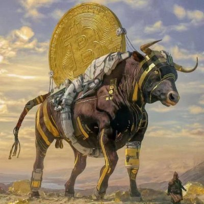

← 返回公开书架 #1 · wufantouzi ·
#1 · wufantouzi ·
类似 OUSD 的 USDG
和号称百家机构合作
储备国债产生的利息97%
分给做市商、交易所、钱包等生态合作方
发行方只留存少量收益
依靠全网流动性分红做大规模
结果呢
市场份额还不到 usdc 的 5%
目前发行量 30 亿美金左右
每个新的 gpu 厂家上来都想干翻英伟达
起码得先干到百亿美金发行量再说吧
 #2 · tothemoonjustin ·
#2 · tothemoonjustin ·
#3 · wanfeng16 ·
 #4 · baggioblue802 ·
#4 · baggioblue802 ·
你这个逻辑水平很差啊，英伟达是有技术和市场壁垒的，circle有真正的不可替代的壁垒吗？
#5 · Wilgo68187151 ·
USDG 是 Paxos 一間 fintech 求交易所幫忙推
OUSD 是 Visa Mastercard Coinbase 自己下場做
這兩件事根本不是同一個物種 拿來類比只是暴露自己沒看清楚名單
Coinbase 同時是 USDC 最大通路也是 OUSD 發起方 你的經銷商自己開了產線 這個事實多頭可以繼續假裝沒看到
#6 · JamesMeng007 ·
我仔细研究了一下这个联盟，其核心是由stipe发起和管理，拉一些大机构来背书。背景是stipe 自己的稳定币USDB一直没有发展起来，在stipe 的生态里依然以usdc为主导。仔细看看这些联盟成员的表态，目前只有stipe承诺将ousd作为其生态的默认稳定币，solo表态原生支持，其他成员表态都是官话套话。骑墙者多
#7 · aaaxs317 ·
#8 · tothemoonjustin ·
1. crcl？英伟达？ 你在说什么？垃圾跟黄金比？
2. 英伟达有护城河，crcl是什么。。
你这偷换概念，狸猫换太子的说法。。真是一流啊。。怪不得能忽悠人买你的基金甘愿陪钱。。。
#9 · weiwongg ·
Circle被移出了 5 个主要的罗素成长指数能解读一次吗？午饭老师
#10 · LaminarRed ·
股价的走势不是靠计算数学题就能预测的，谁的市场份额能不能干翻谁也对散户毫无意义，散户关心的是能不能赚到钱，这一点上CRCL毫无疑问是不及格的。此外，就算CRCL很久以后回到了100多甚至208，对很多早期入场的人而言也只是解套而已，错过的时间和机会成本是无法挽回的。
Quote
Jun 19
Replying to @kfk_ai
No dividends, no buybacks—however much cash is sitting on the balance sheet, it’s basically meaningless to retail investors, especially since the company’s reputation is utterly terrible. When trading U.S. stocks, keep these two tips in mind to avoid pitfalls: First, steer clear
#11 · AlphaguyTrading ·
每个新的 gpu 厂家上来都想干翻英伟达,这个比喻有点扯。这 GPU 的护城河和稳定币的护城河能一样吗？
#12 · btcethdogemoon ·
哈哈哈哈哈 看评论区就能猜股价 涨的时候老师牛逼 跌的时候午饭傻逼 我还真期待股价涨上天
#13 · hahaho124 ·
#14 · AoQo57108924 ·
你这屌毛水平，投研能力还不如豆包,唯一强的就只有嘴硬能力了。
#15 · 0xMichael ·
usdg和ousd在b端完全不是一个级别的，stripe会把ousd设置成默认币种
 #16 · onebitking ·
#16 · onebitking ·
看了一圈评论区，每当wufan被骂，要么就是CRCL的底部，要么CRCL一蹶不振，目前看不容乐观。
#17 · Jief76193786 ·
#18 · blueiswise ·
交易所钱包啥的都是什么辣鸡玩意啊，和主流社会比，小虾米而已 等着看，ousd上市不到1周铸造量就秒了usdc
#19 · richmen06119545 ·
你拿usdg 来类比真是一点水平都没有，太让人失望了
#20 · thedratebi ·
这句“先干到百亿发行量”很关键。
每个新GPU厂商都说自己能挑战英伟达，但市场先看你有没有真实客户和规模。
稳定币也一样，别一上来就喊干翻USDC，先证明自己能从30亿跑到100亿再说。
 #21 · GarceauShi47922 ·
#21 · GarceauShi47922 ·
#22 · jun12929567 ·
#23 · LZDD0316 ·
 #24 · ablenavy ·
#24 · ablenavy ·
口气都是干翻英伟达，现实却是份额不到5%，真是一顿操作猛如虎，一看战绩二毛五呀！
 #25 · Jeffson772010 ·
#25 · Jeffson772010 ·
我觉得，以机构间清算，这个市场做到千亿级非常轻松，万亿也不难，最重要的是USDC基本进不去了，清算法案看样子最大输家就是CRCL了，被coin 背刺了，光头太不要脸了
 #26 · ruxichang46453 ·
#26 · ruxichang46453 ·
不要再固执了午饭老师，及时调整才是正解，circle的护城河只有先建立的标准体系，除此之外能打的出手的牌寥寥无几，下个月就要和coinbase进行分成洽谈，这个时机出这种事，很不妙啊。
#27 · davidyinai ·
#28 · 8FfmvzTRrJSMxlH ·
#29 · com1223 ·
这个判断我同意。稳定币不是谁补贴高谁就能赢，真正难的是让交易所、钱包和做市商形成长期使用习惯。短期让利可以拉增长，但流动性和信任才是最后的护城河。
#30 · sccabhe75023 ·
老牌银行有几十万亿美元存款，随便转店成稳定币就吊打circle这种小垃圾
#31 · EdisonGao417264 ·
crcl不等于稳定币界的英伟达.... 这完全不是一个概念... gpu是完全垄断的，英伟达的护城河是生态，强行绑定，一旦换别家，就得涉及到的所有客户公司都得重新用别家的生态，成本很高，但是我这个客户从usdc切到ousd那就是1s钟都不停留的，没任何成本还有收益。而不是说我只能用Usdc不能用Ousd。
#32 · langyong666 ·
#33 · qpalzm476806 ·
#34 · Bafek1ze7 ·
crcl 已经失去万亿市值的机会了，未来稳定币竞争力会越来越强，没有护城河还是多看看 ai 股票吧
#35 · Cynbd123451 ·
#36 · Maddere7 ·
光分利息不做品牌，用户凭什么从usdc换过来，得先解决信任和流动性深度才行
 #37 · naichalailou ·
#37 · naichalailou ·
#38 · JamesMeng007 ·
CRCL这次不是被罗素体系剔除，而是风格重分类。
iShares代理数据看：
Growth ETF合计减少约18.7万股
Value ETF合计增加约32.6万股
Growth/Value净增约13.9万股
加上母指数ETF，样本内净增约48.7万股
所以结论不是“指数抛售CRCL”，而是“Growth卖、Value买，整体样本净加仓”
#39 · rzc19850328 ·
#40 · zephyr_xai ·
 #41 · YxSebastian ·
#41 · YxSebastian ·
#42 · ccbeto222 ·
别主观硬抗，再想透一次，还是干的话，兄弟起上. 不过，我已先干了！
#43 · 18wangex ·
#44 · VuleTiger ·
3月份的时候写的一个评论：
最近CRCL涨了，跌了这么多反弹也没有什么不正常的。我还是这个认识：
Circle赌的是：美元稳定币会成为全球数字支付的基础设施层。
Show more

#45 · 0nebcher · #46 · Gaol95424Molly ·
#47 · airdrop_99999 ·
#48 · cenhaozai ·
#49 · dr4xey ·